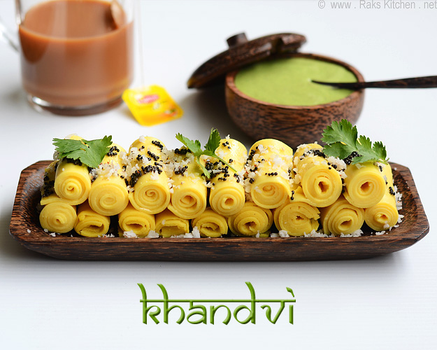

Khandvi

Khandvi is a popular Indian snack made from gram flour (besan) and yogurt, which is then seasoned with spices and tempered with mustard seeds and curry leaves. It has a unique, melt-in-your-mouth texture and is both delicious and healthy. Here's a basic recipe for making Khandvi:
Ingredients:
- For the khandvi:
- 1 cup gram flour (besan)
- 1 cup plain yogurt (curd)
- 1 cup water
- 1/2 teaspoon turmeric powder
- 1/2 teaspoon asafoetida (hing)
- Salt to taste
- 1 tablespoon ginger-green chili paste
- 1 tablespoon oil
- For the tempering:
- 2 tablespoons oil
- 1 teaspoon mustard seeds
- 1 teaspoon sesame seeds
- 1-2 green chilies, slit
- A few curry leaves
- 2 tablespoons chopped cilantro (coriander leaves)
- Grated coconut for garnish (optional)
Instructions:
- Prepare the Batter:
- In a mixing bowl, combine the gram flour, yogurt, water, turmeric powder, asafoetida, salt, and ginger-green chili paste.
- Mix well until you have a smooth, lump-free batter.
- Cook the Khandvi:
- Heat 1 tablespoon of oil in a non-stick pan or heavy-bottomed saucepan over low to medium heat.
- Pour the batter into the pan and start stirring continuously to avoid lumps.
- Continue to cook and stir until the mixture thickens and leaves the sides of the pan. This should take about 10-12 minutes.
- Once the mixture is thick and cooked, quickly spread it onto a clean, greased surface, such as a greased plate or a stainless steel counter-top.
- Roll the Khandvi:
- While the mixture is still hot, use a flat spatula to spread it evenly into a thin, even layer.
- Allow it to cool for a few minutes, then cut it into strips using a knife.
- Roll the Strips:
- Gently roll each strip to form a cylindrical shape. The Khandvi should be thin and delicate, like a Swiss roll.
- Prepare the Tempering:
- Heat 2 tablespoons of oil in a small pan.
- Add mustard seeds and sesame seeds. Let them splutter.
- Add green chilies and curry leaves. Fry for a minute.
- Pour this tempering over the rolled Khandvi.
- Serve:
- Garnish with chopped cilantro and grated coconut if desired.
- Let the Khandvi cool for a few more minutes before serving.
Khandvi is typically served with green chutney or tamarind chutney. It's a delicious and nutritious snack that's perfect for tea-time or as an appetizer. Enjoy!
Back to Odin Recipes